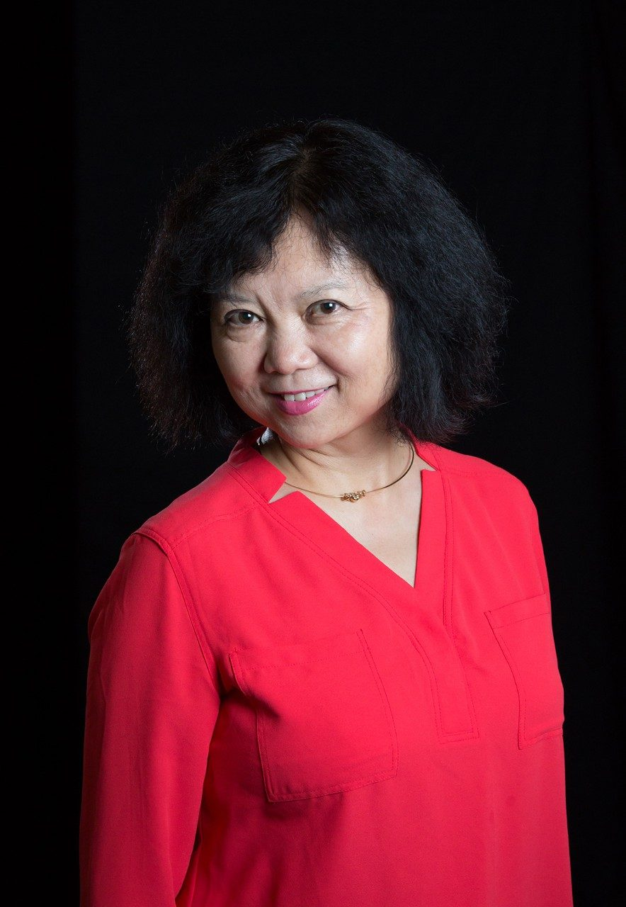

Course Description
The course provides instructions on Chinese pronunciation (including the pinyin Romanization system), simple Chinese grammar and sentence structures, basic verbal communication in a variety of settings, the principal rules behind writing Chinese characters, and an introduction to Chinese customs and traditions. The course covers the following topics: greetings, self-introduction, family members, occupations, date and times, hobbies, and social visits. Students will learn approximately 180 Chinese characters/phrases. The course stresses communication skills and its practical application to daily life.
Teacher's Biography: Rebecca Chang
Rebecca Chang is a fun, caring, energetic professor. She cares deeply for her students and encourages growth for all in the Chinese culture, customs, and language. She originated from mainland China and moved to America to start a new life for herself. She spoke very little English upon arriving to the United States, then later on found work as a teacher for Mandarin Chinese at Virginia Tech. Chang teaches both Elementary Chinese and Advanced Chinese at the university. As an individual who cares greatly for her culture, she embodies a bubbling personality when carrying out her teachings. In her free time, she likes to hang out with friends, drink tea, sing, watch Chinese movies, and watch T.V.
My Opinion and Experience
My experience in this class has been extremely fun. As an individual who comes from a Chinese background, I resonated deeply with the course and its lessons. I found it super intriguing and engaging as I learned more about my native language. I got to learn how to read and write, as well as grow my ability to speak Manadarin.
I enjoyed my time a lot when coming to this class. Every Monday, Wednesday, and Friday I was excited to go to class and learn more about my language. At times I found it easy due to the fact that I knew some background knowledge of the langauge. However, at times I did find it challenging as I have no knowledge about reading or writing Chinese. I am expected to earn a good grade in this class.
